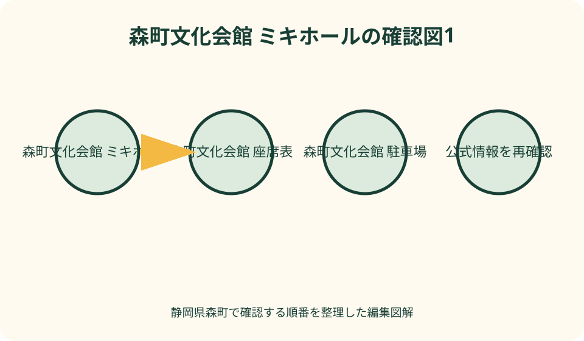
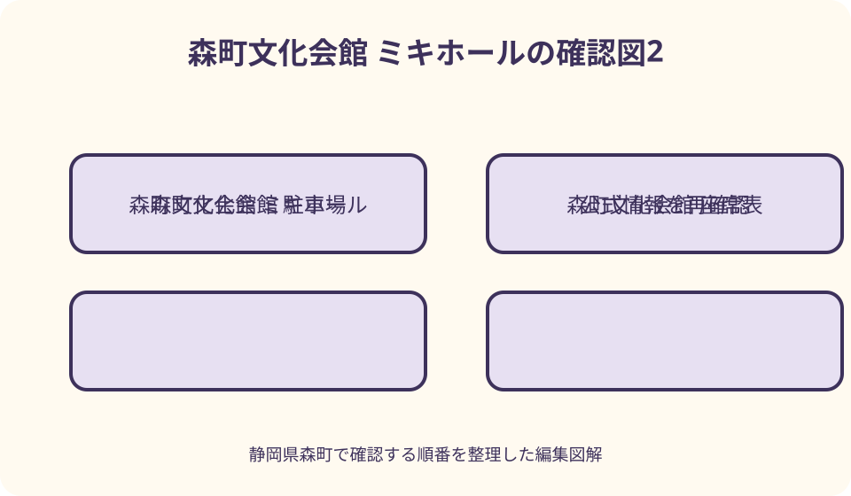

文化施設・公演｜最終確認 2026-08-10
静岡県森町文化会館ミキホールの座席・アクセス・駐車｜公演日の確認手順
森町文化会館ミキホールへ行くときは、公演ページと券面で会場が大ホール・小ホール・研修室等のどれか、指定席か自由席か、開場・開演、入口を確認します。大ホールの公式案内は固定席797席・車いす専用席3席ですが、販売対象や舞台設営は公演ごとに異なります。文化会館の駐車場270台は図書館や他施設利用と共有されるため満車代案を持ち、鉄道なら森町病院前駅徒歩約1分を第一候補に、終演後の列車まで先に確認してください。

編集イラスト最初に照合する——公演名、日付、会場、券面の四項目
静岡県森町文化会館ミキホールへ向かう前に、公演名、開催日、会場名、手元の券面を一行に並べます。同じ文化会館でも大ホール、小ホール、研修室、展示ギャラリー、屋外広場では入口と客席の考え方が異なります。
森町文化会館の公式イベントページで、開場、開演、終演予定、入場料、全席指定か自由席か、年齢制限、主催者、問い合わせ先を確認します。検索結果に残る過去公演の時刻を、別の公演へ移しません。
券面または電子チケットには、公演名、日付、席番、入場口、注意事項が記される場合があります。公式ページと異なる点があれば、自分で新しい方を判断せず、販売元または主催者へ問い合わせます。
文化会館の代表的な取扱時間は九時から十七時、月曜休館と案内されていますが、公演の入場可能時刻とは別です。チケット窓口の営業時間と、催事当日の建物入口・開場を一つにまとめません。
施設区分を知る——大ホール以外もミキホール内にある
森町公式の施設紹介は、文化会館に大ホール、小ホール、研修室、音楽室、美術工芸室、和室、茶室、図書館などがあると案内しています。「ミキホール」と書かれていても、すべての催しが大ホールとは限りません。
大ホールは演劇、舞楽、音楽、講演、式典、上映等に対応する多目的ホールとして紹介されています。公演ページが大ホールと明記した場合にだけ大ホール座席表を使い、会館名だけで席位置を探しません。
小ホールは平土間式で、目的に応じて椅子や展示パネルを配置できる空間と公式が説明しています。固定された常設座席表を前提にせず、当日の配席、整理番号、立見、車椅子動線を主催者へ確認します。
研修室には公式掲載上、第一研修室四十五名、第二研修室二十四名、第三研修室十六名という定員がありますが、公演の販売席数とは別です。机配置や使用目的で入室人数が変わる可能性を考えます。
大ホール座席表を読む——797席を販売席数と同一にしない
二〇二五年十二月十日更新の森町公式案内は、大ホールを固定席七百九十七席、車いす専用席三席と掲載し、PDFの座席表も公開しています。これは施設の座席構成であり、各公演が全席を販売する保証ではありません。
舞台機材、音響卓、撮影、関係者席、見切れ、安全管理により販売しない列や席が設けられる場合があります。座席表に番号があることを、購入可能や同じ見え方の保証と考えず、公演の販売画面と照合します。
座席表では列記号、席番号、舞台の方向、通路、車いすスペースを確認します。左右を舞台から見た側か客席から見た側か思い込まず、PDFの向きと券面の表記を見て、分からなければ会館へ質問します。
前方、中央、後方のどこが最良かは、演劇、講演、映画、音楽、舞楽で変わります。音響や視界を未経験のまま順位付けせず、段差、通路近く、退出のしやすさなど自分に必要な条件を販売元へ相談します。

指定席・自由席・整理番号を分ける——座席を自分で選べるとは限らない
全席指定の公演は券面の列と番号へ座り、空席があっても移動しません。自由席なら入場順、整理番号、区画、再入場の条件を公演案内で確認します。「自由」という語を館内のどの席でも選べる意味へ広げません。
電子チケットでは、表示開始時期、通信環境、画面の明るさ、同行者への分配を販売元で確認します。入口で初めてログインせず、端末の電池を確保します。スクリーンショット入場が有効かは主催者の案内に従います。
紙券は公演名、日付、開場、会場、席、注意事項を写真で控え、本券は折れや水濡れを避けます。写真だけで入場できると考えず、紛失時の再発行可否を販売元へ確認し、当日は原券を持参します。
子ども券、学生券、友の会券、招待券は、年齢証明、会員証、本人確認、引換が必要な場合があります。一般券の入場方法をそのまま使わず、対象条件と当日の提示物を購入前に読みます。
チケット購入を確認する——窓口、電話、プレイガイドの役割を分ける
文化会館主催公演では、会館窓口、電話予約、外部プレイガイド等が案内される場合があります。二〇二六年の個別公演ページにも複数窓口の例がありますが、すべての公演が同じ販売網を使うとは限りません。
電話予約が仮予約の場合は、支払期限、受取方法、座席確定、キャンセル、手数料を確認します。電話を切った時点で入金済みの確定券だと考えず、予約番号と担当窓口、期限を控えます。
外部プレイガイドでは、会館窓口と在庫、手数料、発券、座席選択が異なる可能性があります。価格だけで比較せず、受取場所と交通、払い戻しの窓口まで見て購入先を決めます。
ミキホール友の会の先行販売は会員対象で、販売場所が限定される公演があります。一般販売と同じ開始時刻や方法だと仮定せず、対象年度の会員資格、会員証、枚数制限を公式案内で確認します。
開場・開演・入館開始を分ける——早く着けば客席へ入れるとは限らない
開場は客席へ案内を始める時刻、開演は公演開始の時刻として読みます。建物の入口を開ける時刻、チケット列の形成、物販、当日券、ロビー利用は別に案内される場合があります。
早く到着しても客席やホワイエへ入れる保証はありません。公演ページに入館開始や入場口の指定がある場合はそれに従い、中央口、関係者口、図書館入口を取り違えず、係員の案内を待ちます。
開場後は、券の確認、トイレ、座席までの移動、上着や荷物の整理に時間がかかります。車いす、歩行補助、子ども連れ、大きな荷物がある場合は、何分前に来ればよいか主催者へ相談します。
遅れて到着した場合、演出上すぐ客席へ入れず、係員が案内する時点まで待つことがあります。暗い客席で自分だけで席を探さず、入口で券を示し、指定された通路を使います。

小ホール・研修室の催しを見る——固定席の考え方を持ち込まない
小ホールは平土間式で、催しに応じて椅子や展示パネルを配置できると公式紹介にあります。座席の列、段差、入口、車いす場所が毎回同じだと考えず、主催者が作る当日配置を確認します。
展示会では椅子席がなく、出入りや鑑賞経路が設定される場合があります。音楽会や講演会でも自由席、指定席、整理番号があり得るため、小ホールという部屋名から入場方式を決めません。
研修室の催しは、会議机を使うか、椅子だけか、オンライン併用かで受付と定員が変わります。文化会館公式の施設定員を、イベントの募集定員や当日参加枠へ読み替えません。
展示ギャラリー、喫茶ラウンジ、エントランスロビーも施設紹介に載りますが、いつでも催しの待機場所や飲食場所になるとは限りません。展示期間、営業時間、貸切、飲食可否を当日案内で確認します。
車いす席・移動支援を相談する——3席の表記だけで予約を完了しない
大ホールには公式上、車いす専用席三席があります。しかし、各公演での販売方法、同伴者席、介助者券、車いす寸法、移乗、入口は公演ごとに確認が必要です。一般席を買って当日移動できると期待しません。
チケット購入前に、車いす利用、歩行距離、段差、座席への移乗可否、同伴者数、送迎、トイレを会館または主催者へ伝えます。必要な配慮を具体化し、病名や詳細な個人情報を必要以上に説明しません。
公式設備案内には小ホール専用の車いす用エレベーターが掲載されていますが、どの階・経路に使えるかを現地で推測しません。大ホールや研修室へ向かう移動経路は、会場ごとに事前確認します。
車いす用駐車区画、乗降場所、貸出車いす、付き添い待機場所は、存在や空きを記事で保証しません。公演日の利用可否と到着時の連絡方法を会館へ相談し、玄関前へ無断で長時間停車しません。
聞こえ・見え方を相談する——補聴設備や支援を推測しない
補聴援助、字幕、手話通訳、音声ガイド、拡大資料、誘導が必要な場合は、公演主催者と会館へ事前に相談します。設備案内に記載が見つからないことを「ない」と断定せず、逆に他館と同じ設備があるとも考えません。
聞こえに関する相談では、補聴器や人工内耳の使用、希望する支援、座席位置、貸出機器の接続方法を確認します。機器の台数、対応席、電池、返却方法は当日の案内に従います。
見え方に関する相談では、舞台への距離だけでなく、階段、暗転、案内表示、介助者席を確認します。前方席なら必ず見やすいと決めず、演出や舞台の高さを主催者へ尋ねられるか確認します。
アレルギー、医療機器、光や音への配慮、休憩中の退席などが必要な場合も、対応できる範囲を相談します。すべての要望が実現すると保証せず、難しい場合は配信、別公演、資料鑑賞という代案を持ちます。
館内設備を当日確認する——医務室やエレベーターを常時対応と読まない
森町公式のその他設備ページには、会館事務室、医務室、小ホール専用エレベーター等が紹介されています。設備名があることと、医療従事者の常駐、自由利用、全会場への移動対応は別です。
体調が悪くなったら自分で医務室を探さず、近くの係員へ伝えます。常備薬、救急対応、休める時間を想定せず、必要な薬や緊急連絡先は自分で準備します。重大な症状は公演継続より救急要請を優先します。
トイレ、授乳、おむつ替え、コインロッカー、クローク、飲料、喫煙、再入場は公演案内または会館へ確認します。文化会館内の図書館設備を、公演来場者が閉館後も使えるとは考えません。
ロビーのストリートピアノは公式上、九時から十七時を基本利用時間とし、状況により使えない場合があるとされます。公演待ちに必ず弾ける設備ではなく、催事進行と会館の指示を優先します。
駐車場を計画する——270台は共有容量で、空車保証ではない
文化会館公式アクセスは駐車場二百七十台と案内しています。ただし、同じ施設には図書館や研修室等があり、同時刻に別催事が重なる場合があります。公演専用に二百七十台が確保されると読みません。
主催者が臨時駐車、満車時の誘導、送迎場所、開場前の入庫時刻を案内しているか確認します。案内がなければ会館へ問い合わせ、周辺店舗、病院、住宅、路肩へ無断駐車しません。
車は一台に乗り合わせれば必ずよいとは限らず、車いす、子ども、終演後の行先を考えます。乗り合わせ場所の駐車許可、運転者の休憩、帰宅時間を決め、飲酒を伴う催しでは運転しない手段を選びます。
駐車位置から入口までの距離、雨、暗さ、段差も計画へ入れます。早く停めるため入口前で同乗者を無断降車させず、係員が示す乗降場所を使います。帰りに車を見失わないよう区画を記録します。
鉄道で行く——森町病院前駅と遠州森駅を使い分ける
文化会館公式アクセスは、天竜浜名湖鉄道の森町病院前駅から徒歩約一分、遠州森駅から徒歩約十分と掲載しています。最寄りとして森町病院前駅を候補にしつつ、公演時刻に合う列車を鉄道会社公式で確認します。
徒歩時間は施設案内の目安で、ホームから出口、道路横断、雨、混雑、歩行速度を含む保証ではありません。初めてなら明るいうちに入口と駅への戻り道を確認し、開演前の余裕を加えます。
遠州森駅を使う場合は、町歩きや食事と組み合わせやすい可能性がありますが、荷物と天候を考えます。近道を探して線路沿いや私道へ入らず、地図上の公道と横断箇所を使います。
終演が列車時刻に近い場合は、拍手中に退出する計画ではなく、次の便、タクシー、迎えを事前に用意します。臨時列車があると期待せず、運休や遅延時の鉄道会社案内も確認します。
バスと送迎を確認する——公演時刻と最終便を別表で合わせる
バスを使う人は、森町公式の公共交通ページから運行事業者、路線、停留所、運行日、予約要否を確認します。文化会館の催しページにバス案内がないから運行しない、または毎日運行すると判断しません。
往路は開場前に到着する便、復路は終演予定と退場時間を加えて乗れる便を選びます。公演の終演予定は延びる場合があるため、最終便一本だけに依存せず、迎えやタクシーの連絡先を控えます。
停留所から会館までの歩道、信号、夜間照明を地図と現地で確認します。似た停留所名や反対方向の乗場を取り違えないよう、帰りの乗場写真は交通の妨げにならない位置から記録します。
送迎を頼む場合は、終演後の待合場所、車の進入方向、携帯連絡、満車時の合流を決めます。玄関正面に停め続ける前提にせず、会館が指定する乗降場所があるか事前に尋ねます。
終演後の帰路を先に作る——退場、トイレ、駅までの時間を足す
帰宅計画は終演予定時刻に、規制退場、混雑、トイレ、荷物、駐車場または駅までの移動を加えて作ります。終演と同時に車が出庫できる、列車ホームへ着くとは考えず、余裕を追加します。
駐車場では歩行者が車列の間を通り、暗い時間は見えにくくなります。急いで出庫せず、同乗者が全員乗ったことを確認します。渋滞回避のため住宅街の細道へ入らず、案内された出口を使います。
鉄道利用者は、森町病院前駅までの道を開演前に確かめ、終演後は同じ安全経路を使います。ホームで走らず、券の扱いと乗車方向を事前に確認します。乗り遅れた場合の次便を共有します。
子ども、高齢者、車いす利用者と一緒なら、混雑が落ち着くまでロビーで待てるか会館へ相談します。閉館作業の妨げにならない範囲を確認し、待機できない場合は係員の誘導に従って安全な合流場所へ移ります。
中止・延期・休演時に切り替える——払い戻し窓口を購入先で確認する
公演が中止、延期、出演変更になった場合は、文化会館、主催者、購入したプレイガイドの公式発表を確認します。SNSの転載や同行者の連絡だけで移動せず、対象公演名と日付を照合します。
払い戻しは、購入先、券種、期間、紙券の有無、手数料で手続が異なる場合があります。会館で買っていない券を会館窓口へ持参すれば処理できると考えず、販売元の案内へ従います。
延期日へ行けない場合の扱い、交通費、宿泊費、駐車予約は主催者の規約を読みます。出演者変更だけで払い戻しになると決めず、購入時の注意事項と発表を確認し、期限内に手続します。
現地到着後に休演を知った場合も、閉鎖区画へ入らず、係員の案内を聞きます。図書館や他施設が開いているとは限らないため、同じ建物内で代替時間を過ごす計画へ即座に切り替えません。
良い点——ホール規模と鉄道駅の近さを公演に合わせて選べる
森町文化会館ミキホールの良い点は、大ホール、小ホール、研修室等があり、演劇、舞楽、音楽、講演、展示など異なる規模の催しを受け入れられることです。会場区分を確認すれば迷いを減らせます。
大ホールは公式の座席表と固定席七百九十七席、車いす専用席三席の情報が公開されています。購入前に列と番号を確認できる一方、公演ごとの販売対象や支援席は別に相談するという判断ができます。
森町病院前駅から徒歩約一分という公式アクセスは、車を使わない来場を検討しやすくします。遠州森駅から約十分という選択肢もあり、公演前後の予定と列車に合わせて駅を選べます。
文化会館には図書館や文化活動の部屋もあり、地域の生涯学習拠点として使われています。ただし公演来場者がすべてを同時利用できるとは限らないため、催事と通常施設の開館を分けて確認できることが重要です。
注文したい点——会場・席・券・支援・交通を主催者へ確認する
注文したい点の第一は、会場名と配席です。大ホールなら公式座席表と券面、小ホールや研修室なら主催者の当日配置を確認します。指定席、自由席、整理番号、立見を一つの方式だと考えません。
第二は、券と時間です。販売元、支払、発券、入場条件、開場、開演、終演予定、入口、年齢制限を公演ページで確認します。友の会、学生、招待など券種固有の提示物も準備します。
第三は、車いす、聞こえ、見え方、移動、医療上の配慮です。公演ごとの対応席、同伴者、補聴支援、字幕等を事前相談し、施設ページに見つからない設備をあるともないとも断定しません。
第四は、駐車と帰路です。共有駐車場の催事日運用、満車時代案、森町病院前駅・遠州森駅の列車、バス最終便、送迎合流を確認します。終演予定から退場時間を足して計画します。
対案・結論——座席より先に、会場と帰りの便を確定する
結論として、公演ページで会場を確定し、券面と配席方式を確認したら、先に帰りの列車、バス、迎えを決めます。その後で大ホール座席表や小ホールの当日配置を見れば、終演後まで含む席選びになります。
大ホールの七百九十七席・車いす専用席三席は施設情報として使い、公演の販売席数や空席数には使いません。見え方や聞こえを保証するおすすめ席を作らず、自分の移動条件を主催者へ相談します。
車では二百七十台の共有駐車場を空車保証と考えず、鉄道なら森町病院前駅を第一候補にします。満車、運休、終演延長に備え、次便または送迎の代案を一つ持ち、同行者へ共有します。
中止や延期は購入元の公式発表から払い戻し方法を確認します。休演日に図書館や別催事が開くとは限りません。公演名、会場、券、支援、交通の五点を確認できた時点で来場を確定します。
大石の視点——良い席とは、終演後まで無理なく使える席
私がミキホールへ行くなら、座席表を見る前に、森町病院前駅の帰りの列車か駐車場からの出庫を決めます。公演を最後まで見て安全に帰れる時間が分かってから、通路、段差、席番を確認します。
前方中央を自動的な良席とは考えません。歩行に不安があれば通路への出やすさ、子ども連れなら年齢条件とトイレ、聞こえに配慮が必要なら支援設備の相談を優先します。自分が使い切れる席が良い席です。
車いす専用席三席という数字を見ても、空いているか、同伴者と並べるかは分かりません。券を買う前に会館へ電話し、入口から席、トイレ、帰りの乗降まで一本の動線として相談します。
公演日は、舞台の感想だけで終えず、帰路の混雑と次回改善点を記録します。何分前に到着し、どの駅や駐車区画を使い、何分で退出できたか。この記録が、次のミキホール来場を確かなものにします。
公式情報・確認先
掲載内容は次の一次情報を基礎に整理しました。営業、料金、催し、交通は変わるため、出発前または手続き前にリンク先で最新情報を確認してください。
- 森町文化会館施設紹介（静岡県森町、2026-08-10確認）
- 大ホール・リハーサル室・楽屋（静岡県森町、2026-08-10確認）
- 大ホール座席表（静岡県森町、2026-08-10確認）
- 小ホール・展示ギャラリー・喫茶ラウンジ（静岡県森町、2026-08-10確認）
- 研修室・茶室・和室・美術工芸室・音楽室（静岡県森町、2026-08-10確認）
- その他施設・設備（静岡県森町、2026-08-10確認）
- 森町文化会館 アクセス（静岡県森町、2026-08-10確認）
- 森町文化会館 ご利用案内（静岡県森町、2026-08-10確認）
- イベント情報（静岡県森町文化会館、2026-08-10確認）
- 森町の公共交通について（静岡県森町、2026-08-10確認）
- 森町立図書館 施設案内（静岡県森町、2026-08-10確認）